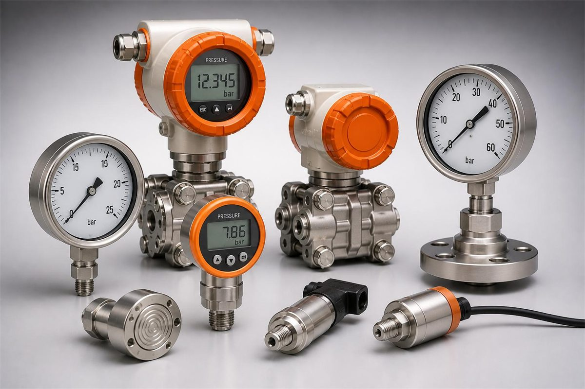

Trong các hệ thống sản xuất công nghiệp, áp suất là một trong những thông số kỹ thuật cần được theo dõi thường xuyên. Việc sử dụng thiết bị đo áp suất phù hợp giúp doanh nghiệp kiểm soát tình trạng vận hành, phát hiện bất thường và hạn chế những sự cố có thể ảnh hưởng đến dây chuyền sản xuất.
Vai trò của thiết bị đo áp suất trong sản xuất
Thiết bị đo áp suất được sử dụng để xác định áp lực của chất khí hoặc chất lỏng bên trong đường ống, bình chứa và các hệ thống kỹ thuật. Thông qua các chỉ số hiển thị, người vận hành có thể theo dõi tình trạng hoạt động của thiết bị và kịp thời nhận biết những thay đổi bất thường.

Trong nhà máy, đồng hồ đo áp suất thường xuất hiện tại hệ thống máy nén khí, đường ống dẫn khí, hệ thống cấp nước, nồi hơi và các thiết bị thủy lực. Đây là cơ sở giúp kiểm soát áp lực làm việc, hạn chế tình trạng quá áp hoặc sụt áp gây ảnh hưởng đến hiệu suất vận hành.
Những tiêu chí cần quan tâm khi lựa chọn
Tùy vào môi trường và mục đích sử dụng, doanh nghiệp cần lựa chọn thiết bị đo áp suất có thông số phù hợp. Một số yếu tố quan trọng gồm:

- Dải đo: Phải đáp ứng mức áp suất làm việc thực tế của hệ thống.
- Độ chính xác: Đảm bảo kết quả đo đáng tin cậy, phục vụ quá trình kiểm soát kỹ thuật.
- Môi trường sử dụng: Cân nhắc nhiệt độ, độ ẩm, độ rung và đặc tính của môi chất.
- Vật liệu và kết cấu: Lựa chọn phù hợp với điều kiện lắp đặt, đặc biệt đối với môi trường có tính ăn mòn.
- Kiểu kết nối: Đảm bảo tương thích với đường ống và vị trí lắp đặt.
Bên cạnh đó, thiết bị cần được kiểm tra, bảo dưỡng định kỳ để duy trì độ chính xác và khả năng hoạt động ổn định.
Chủ động kiểm soát để nâng cao hiệu quả vận hành
Việc theo dõi áp suất không chỉ giúp phát hiện sự cố mà còn hỗ trợ doanh nghiệp đánh giá tình trạng hoạt động của toàn bộ hệ thống. Khi các thông số được kiểm soát tốt, nhà máy có thể hạn chế thời gian dừng máy, giảm chi phí sửa chữa và nâng cao hiệu quả sản xuất.
Với danh mục cung ứng thiết bị công nghiệp, thiết bị đo lường và vật tư kỹ thuật, Công ty TNHH Thương mại Hóa Đông hướng đến đáp ứng nhu cầu lựa chọn thiết bị phục vụ hoạt động sản xuất của doanh nghiệp. Việc lựa chọn đúng chủng loại, thông số và mục đích sử dụng là yếu tố quan trọng để thiết bị phát huy hiệu quả trong thực tế.